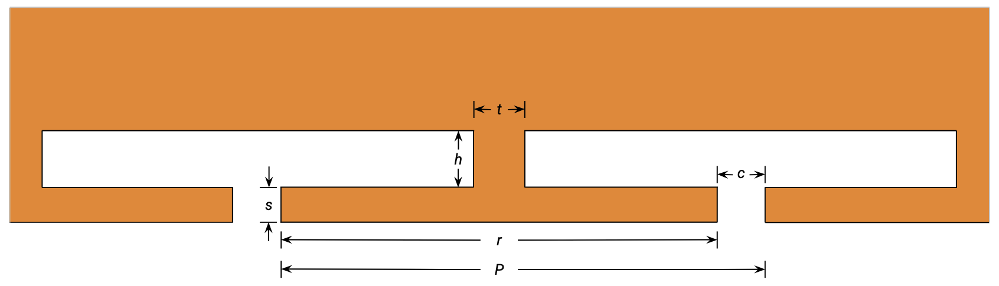

In a silicon photonic Mach–Zehnder modulator, the two numbers a customer actually reads off the datasheet are bandwidth and VπL. Bandwidth tells them how fast the device can swing; VπL tells them how short it can be for a given drive voltage and extinction ratio. The two are physically coupled, a heavier-doped junction gives lower VπL but loads the microwave electrode harder, and the bandwidth falls. Where you choose to sit on that curve is the operating point of the whole modulator.
Drawing the curve is famously slow. Each point on it requires self-consistent electrostatic charge simulations of the PN junction, optical mode solve to get the phase-shift efficiency, optimizing the microwave electrode that loads it that needs several 3D RF FDTD simulations, and a stack of analytic post-processing to fold the junction back into the loaded transmission line. Four different physics, four different solvers, all indexed by a geometry that has to stay consistent across them. Most teams pick one operating point and ship a single device, because doing it for ten points is months of work.
We let an LLM-orchestrated agent do it in a single overnight run, exploiting Flexcompute’s cloud-based, GPU-native multiphysics solvers to run many simulations in parallel.
Each circle above is one full modulator design: the agent picked a junction operating point (doping × bias) with minimum VπL, and then independently optimized a segmented coplanar-strip electrode for that specific junction. The bandwidth on the y-axis is the EO 3-dB bandwidth of the loaded line at that geometry, sized for a 5-dB extinction ratio at 2 V_pp push-pull. The x-axis is modulation efficiency, 1/VπL — higher is a more efficient (shorter) device.
The Pareto curve is the result. To raise the bandwidth above ~30 GHz you have to accept a lower-doped junction with VπL ≥ 1 V·cm — i.e. a longer device. To make the device short (sub-300 µm), you have to accept BW around 22 GHz. There is no operating point that gives both, in this fab process, with this electrode topology. That single curve is something a discrete-device designer can act on.
The process is two nested optimizations, and each one calls on multiple physics solvers.
Outer step: choose the junction. The PN junction is a family of devices, parameterized by doping level and reverse bias. To know which (VπL, C) operating points are even reachable in a given fab process you have to sweep doping and bias. Each (doping, bias) point needs a Tidy3D Charge solver run for C(V), a Tidy3D mode-solver run for VπL and loss, and a local Laplace solve for R(V). Ten doping levels by nine bias points is ninety self-consistent junctions just to map the achievable (VπL, C) cloud.
Inner step: design the electrode for that junction. Once a junction is picked, the segmented coplanar-strip electrode loading it is its own 8-parameter geometry optimization. Every candidate electrode requires a 3-D RF FDTD simulation plus wave-port mode solves, followed by ABCD de-embedding of the feedlines and analytic loaded-line post-processing to get Z0,loaded, neff,RF,loaded, and αloaded at the band centre. A Bayesian optimization + AI decision at each step, over an 8-D box takes on the order of 20 RF FDTDs to converge.
The two steps stack. For 10 operating points on the (VπL, C) frontier, that is 10 × 20 = 200 RF FDTDs, on top of the ~10 charge sims and 10 mode-solver batches of the outer step, and the analytic post-processing that ties the loaded line back to an EO bandwidth.
Each handoff between the steps is on a different physics: doping profile to the charge solver, optical waveguide to the mode solver, aluminum CPS and dielectric stack to the RF FDTD, and a coherent (C, R, length, S-parameters) record to the analytic post-processing. All handled by AI in one integrated multiphysics platform provided by Flexcompute tools.
We split the problem in two.
Step 1 maps the junction. A scalar mult
scales both p- and n-core doping around the nominal process values (p =
5×10¹⁷ cm⁻³, n = 3×10¹⁷ cm⁻³ at mult = 1). Sweep
mult along a bracket-and-fill schedule that places anchors
at {0.2, 1, 5, 20} and then inserts new mults at the geometric midpoint
of the largest gap on the (VπL, C) frontier. Each mult costs one charge
sim plus one mode-solver batch over nine bias points. Ten mults gave
seventy trade-off points across the achievable (VπL, C) Pareto
cloud:

The agent doesn’t have to be clever here. It walks the bracket-and-fill, caches every charge and mode result on disk, and journals each row.
Step 2 designs an electrode per operating point. From the Step-1 journal, pick ten capacitance values linearly spaced across the available range, and for each one choose the Step-1 row with minimum VπL within ±10 % of that C — i.e. the most efficient junction available at that capacitance.
Now run, independently for each of the ten operating points, an 8-parameter optimization of a segmented coplanar-strip T-rail electrode. The geometry is shown below, with one period P of the T-rail structure:

The free parameters are the inner gap g, signal and
ground rail widths ws/wg, T-bar width/length
s/r, T-neck length/width
h/t, and inter-T period gap c.
The objective evaluates the loaded characteristic impedance and loaded
RF effective index at a band-center 25 GHz:
J = ((Re Z₀_loaded(f₀) − 50) / 50)² + ((n_eff_rf_loaded(f₀) − 3.88) / 3.88)²where the junction loading is applied after the FDTD via analytic ABCD arithmetic. The 3.88 target is the optical group index — match it and the optical and microwave waves co-propagate, which is what high-BW MZMs require.
We made nine distinct designs (operating point 8 happened to share a junction with operating point 7, so they tied). The numbers, sorted by efficiency:
| C [pF/cm] | VπL [V·cm] | 1/VπL [(V·cm)⁻¹] | L_MZM [µm] | Z₀_loaded [Ω] | n_eff_RF | BW_3dB [GHz] |
|---|---|---|---|---|---|---|
| 2.92 | 1.523 | 0.66 | 1325 | 49.3 | 3.70 | 38.3 |
| 4.01 | 1.078 | 0.93 | 937 | 48.3 | 4.20 | 36.0 |
| 6.27 | 0.800 | 1.25 | 696 | 38.6 | 4.66 | 33.8 |
| 7.62 | 0.619 | 1.61 | 538 | 32.0 | 4.55 | 26.1 |
| 9.02 | 0.537 | 1.86 | 467 | 30.7 | 4.88 | 25.8 |
| 10.35 | 0.495 | 2.02 | 430 | 27.8 | 5.05 | 24.2 |
| 12.11 | 0.418 | 2.39 | 363 | 26.3 | 5.31 | 23.9 |
| 14.07 | 0.383 | 2.61 | 333 | 22.4 | 5.36 | 21.9 |
| 16.47 | 0.324 | 3.08 | 282 | 21.0 | 5.60 | 21.8 |
Two regimes are visible.
Light-loading regime (C < ~5 pF/cm). The electrode holds Z₀ inside a couple of percent of 50 Ω, and the RF group index sits close to 3.7-4.2. Bandwidth tops out at 38 GHz with a 1.3 mm-long device. This is the operating point a high-speed analog or short-reach coherent designer would pick.
Heavy-loading regime (C > ~7 pF/cm). The
8-parameter electrode can no longer match Z₀ to 50 Ω — the shunt
admittance of the heavily-doped junction pulls the loaded characteristic
impedance into the 20-30 Ω range, and the RF group index overshoots
3.88. Bandwidth collapses below 25 GHz. Six of the eight free parameters
in these best designs are pinned against the fab-rule box
(wg-low, s-low, r-high,
h-low, t-high, c-high), which is
the agent’s way of telling us the bounds are limiting, not the physics.
The reward, though, is footprint: a 282 µm modulator delivers 5 dB
extinction at 2 V_pp.
The corresponding EO frequency responses are below; the headroom above the −3 dB line at low C versus the early rolloff at high C is the bandwidth-vs- efficiency trade made visible:

The engineering takeaway is uncomfortable but real: to get more bandwidth, you have to accept a less efficient (longer) device. The fastest modulator in our sweep is 1.3 mm long; the most efficient is 282 µm but limited to ~22 GHz. There is no free corner in this design space — at least not within the 8-parameter electrode box we gave the agent.